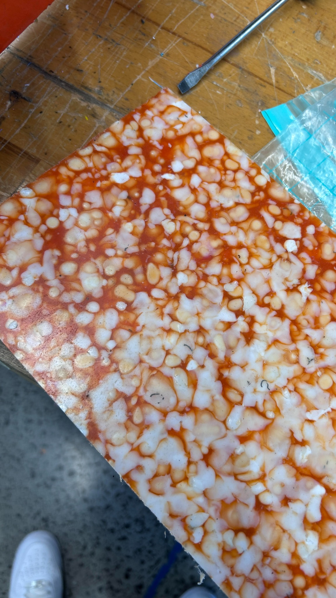
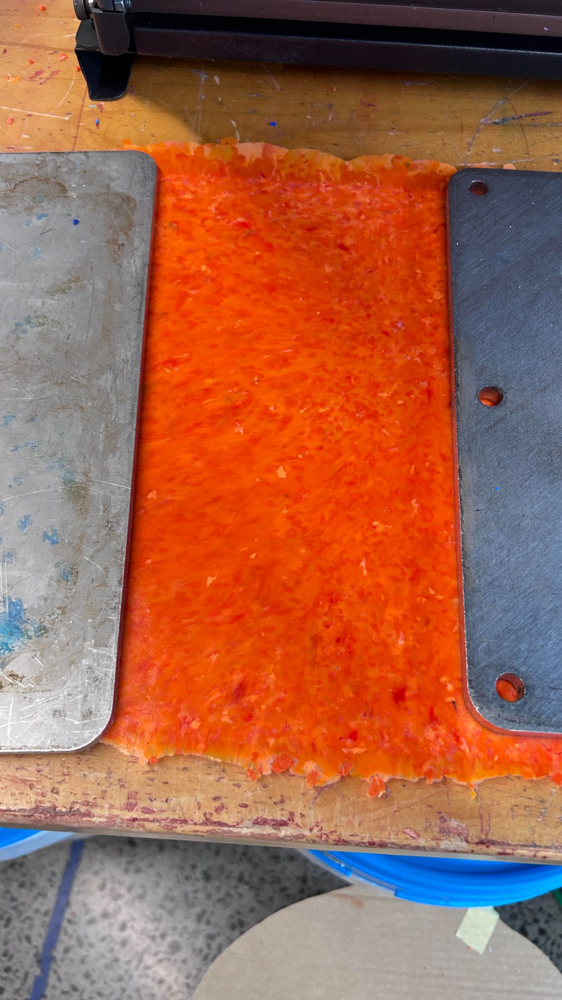
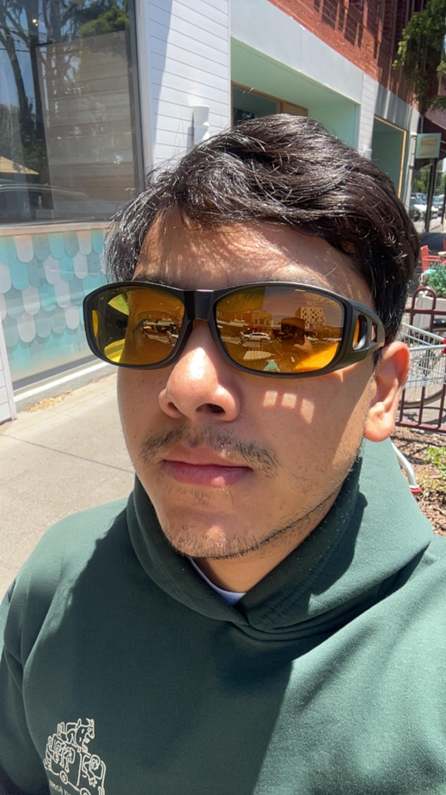
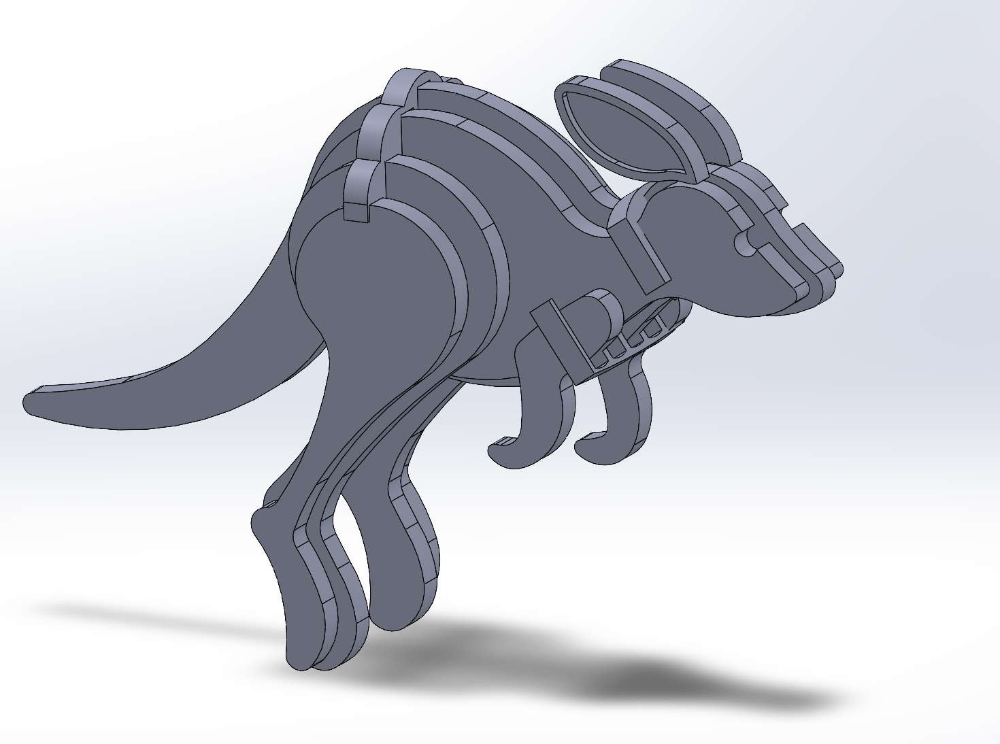
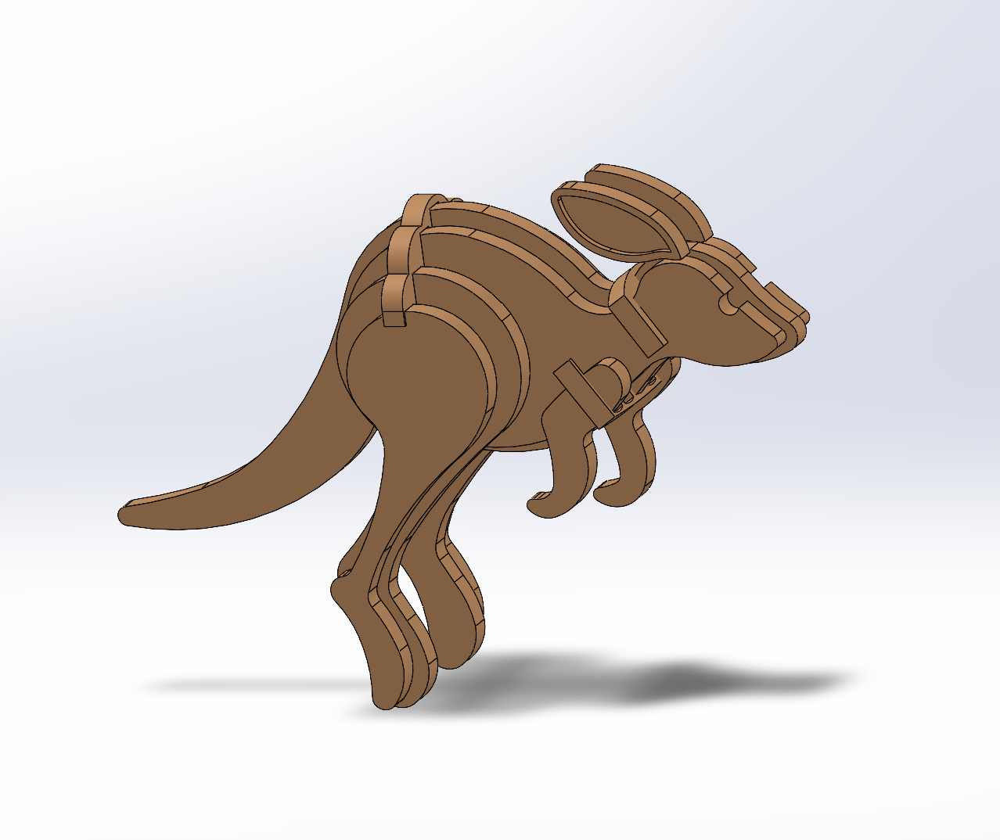
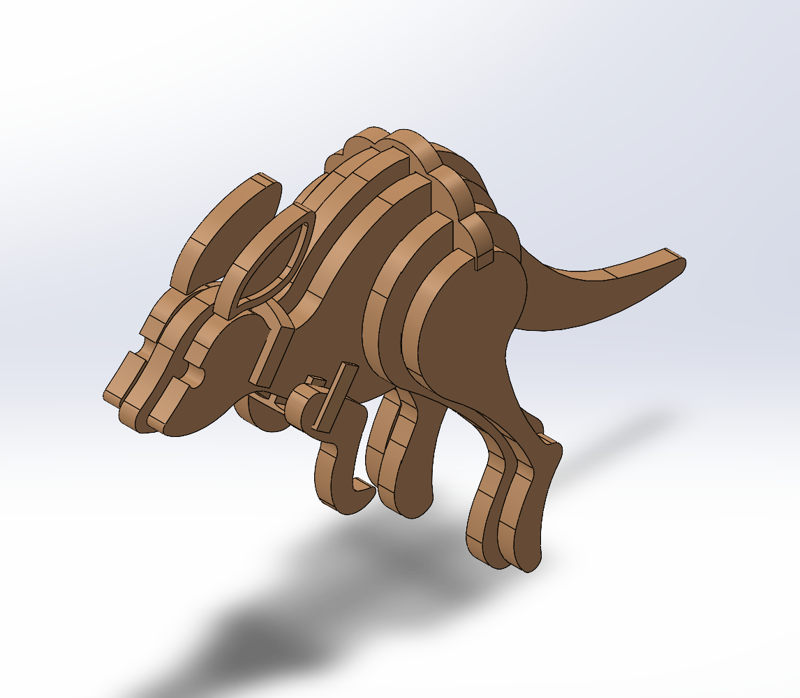

Precious Plastic Product Engineering
Designing and prototyping recycled-plastic products through circular design, digital manufacturing, and hands-on material testing.


Mechanical Engineering • Product Design • Circular Economy
Mechanical Engineering master's student at Monash University with hands-on experience in CAD, digital manufacturing, recycled-plastic product development, and sustainable engineering systems.

About
I am currently pursuing a Master of Professional Engineering in Mechanical Engineering at Monash University. My work focuses on product design, digital manufacturing, energy, sustainability, and material innovation.
I have worked across circular design, recycled-plastic products, battery recycling research, rehabilitation-focused devices, CAD modelling, prototyping, and manufacturing processes.
Projects
Featured Project
A layered CAD design inspired by Australian wildlife. The project demonstrates 3D modelling, part segmentation, profile design, assembly thinking, and design-for-manufacturing.



Designing and prototyping recycled-plastic products through circular design, digital manufacturing, and hands-on material testing.


Conceptual design and analysis of a renewable-energy-powered aircraft for environmental monitoring, including solar-battery and hydrogen options.
Research experience in battery recycling, sustainable waste management, material recovery, and decision-making frameworks for electric vehicle adoption.
Digital manufacturing and design thinking work for healthcare applications, including 3D printing, CAD, and rehabilitation-focused device development.
Skills
Experience
Master of Professional Engineering — Mechanical Engineering
Product Member — recycled-plastic product design, CAD, manufacturing, and circular economy initiatives.
Co-founder and Engineering Lead — plastic recycling, product development, material research, and community engagement.
Engineering Intern — assistive and rehabilitation-focused solutions using digital manufacturing.
Research Intern — battery recycling, energy systems, sustainability research, and workshops.
Contact
I am open to engineering opportunities, internships, collaborations, and project discussions.